VM RHEL - Ajustes após a instalação
TutoriaisCompartilhe esse post nas redes sociais...
** **
Olá Homelabers!
Neste post vamos ver alguns ajustes pós instalação da VM RHEL para Desenvolvimento.
Nível: Fácil.
Este artigo se baseia na VM criada no artigo anterior da série:
Preparando uma VM Red Hat Enterprise Linux para Desenvolvimento.
Após a instalação inicial do RHEL na VM temos alguns ajustes que são importantes e alguns que são meros caprichos, mas por que não…
Conexão com a Internet
Confirme se a conexão com a internet está ativa.
Clique na setinha para baixo no canto superior direito e verifique se está conectado.
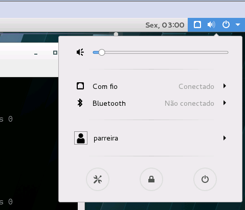
Ativação do RHEL
Como utilizamos uma versão de desenvolvedor do Linux Red Hat Enterprise vamos ativar a instalação e assim usufruir das atualizações e repositórios oficiais da Red Hat.
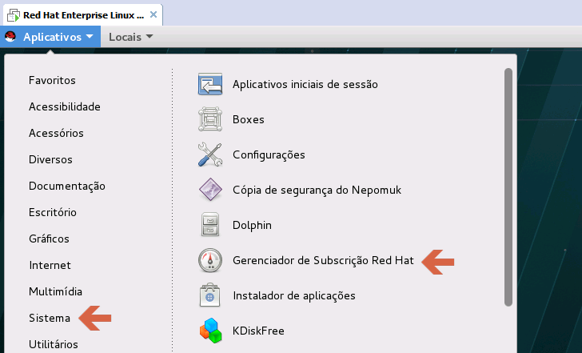
Informe a senha do root.
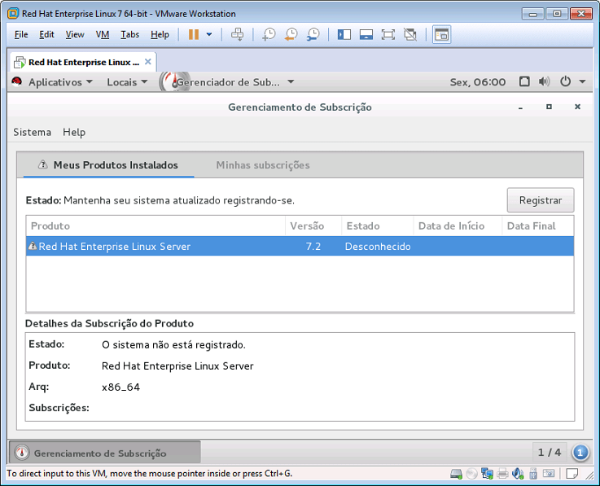
Clique em Registrar.
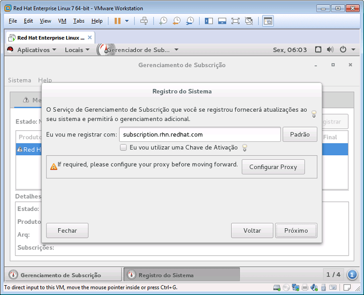
Verifique se precisa inserir informações do proxy e autenticação.
Clique em Próximo.
Informe o usuário e senha utilizados para acessar sua conta de desenvolvedor em http://developers.redhat.com.
Clique em Registrar.
Confirme a subscrição clicando em Conectar.
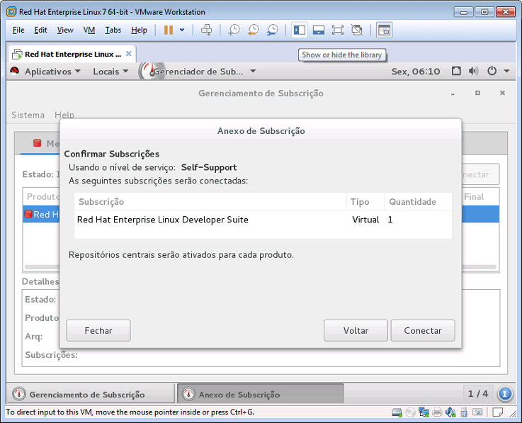
Pronto seu sistema deve estar registrado.
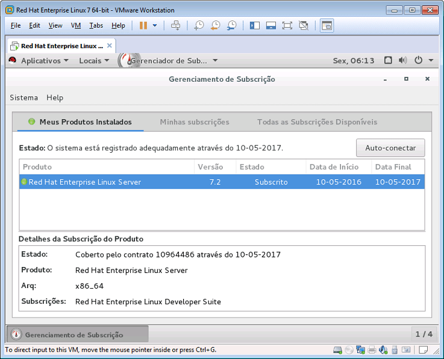
Registrando seu usuário no grupo de sudoers
No Linux diversas tarefas demandam que sejam executadas com privilégios elevados. É uma das proteções mais famosas do sistema que, em conjunto com diversas outras definições e arquitetura, tornam o sistema muito seguro (não totalmente, isso não existe).
Então, quando formos executar tarefas com esta demanda, podemos utilizar o _sudo _para conferir temporariamente estes privilégios ao nosso user. Ao término, os privilégios normais do usuário voltam ao normal.
No RHEL, para que nosso usuário possa utilizar este comando e executar as tarefas com privilégios elevados, precisamos incluí-lo no arquivo /etc/sudoers.
Existem formas diferentes de fazer isto. Aqui vamos usar o programa visudo.
Abra um janela do terminal e digite o texto abaixo seguido ENTER:
sudo visudo
Informe a senha do root definida no processo de instalação.
o aplicativo visudo é uma versão especial do vim que permite editar o arquivo /etc/sudoers de forma segura e evita termos que mexer nas permissões originais do arquivo.
Localize a linha contando o texto root ALL=(ALL) ALL.
Aperte a letra_** i**_ no teclado para inserir novo texto. Insera uma linha logo abaixo de root contendo o nome de seu usuário e o restante permanece igual ao configurado para o root.
Veja como deve ficar abaixo.
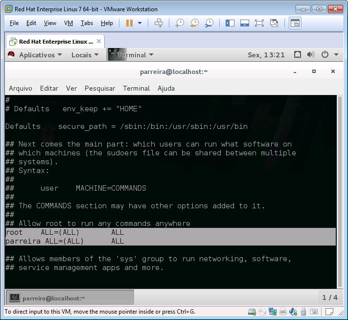
Após terminar a edição aperte ESC. O programa sairá do modo de edição.
Aperte : para entrar no modo de comando e digite wq e pressione ENTER. O arquivo será salvo e o programa encerrado.
Pronto. Agora sempre que precisarmos de permissões elevados podemos utilizar o seguinte formado de comando:
sudo [comando]
Sempre informando a senha do root a cada execução.
Atualizando o sistema
Mesmo após uma instalação nova é recomendável fazer uma atualização no sistema.
É importante que o passo de registro da instalação tenha sido efetuado para podermos utilizar os repositórios oficiais da Red Hat.
Para atualizar o sistema utilize o seguinte comando:
sudo yum update
Serão atualizadas todas as informações dos pacotes e atualizações serão automaticamente selecionadas conforme suas dependências.
O programa pedirá sua confirmação antes de atualizar. Digite Y quando solicitado seguido de ENTER.
Aguarde pois o processo todo pode demorar um pouco.
Criando um atalho de teclado para abrir uma janela do terminal
Frequentemente utilizamos o terminal para executar diversas tarefas. É mais rápido, prático e eficiente.
Vamos criar um atalho de teclado para tornar a tarefa de abrir uma nova janela mais fácil do que ter que navegar no menu até o aplicativo do terminal.
Clique no menu Aplicativos > Sistema > Configurações.
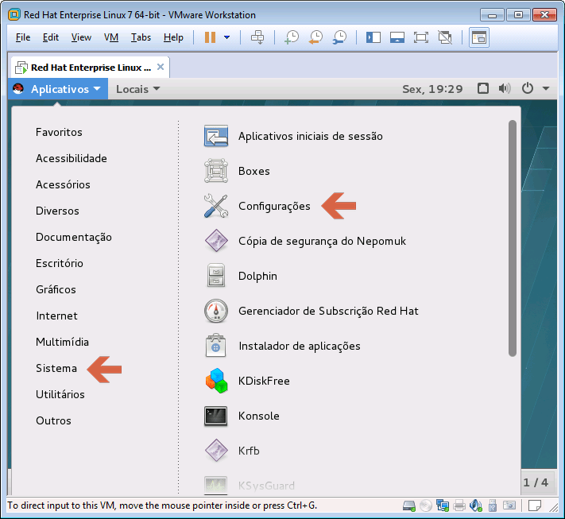
Localize o ítem _Teclado _e clique duas vezes para abrir.
Na janela selecione a aba Atalhos.
Clique na sinal de + mais abaixo na janela para adicionar um novo atalho.
De o nome de _Terminal _e em comando coloque /usr/bin/gnome-terminal.
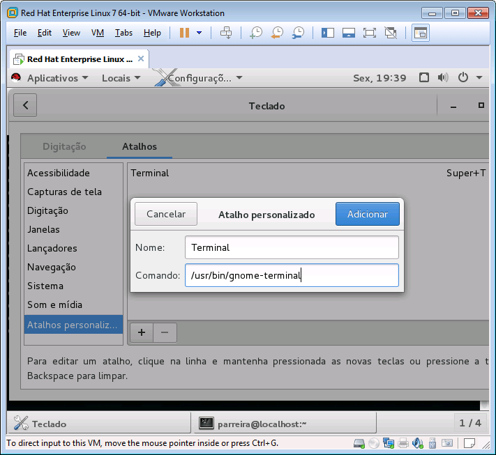
Clique em Adicionar.
Após adicionar o atalho ele aparecerá no final da lista da esquerda, em atalhos personalizados.
Selecione o atalho criado e vamos agora definir a combinação de teclas para ativação.
Clique uma vez sobre o texto _**Desativado **_para iniciar o modo de captura de teclas.
Agora você pode definir a combinação que desejar. Uma combinação muito usada para abertura rápida de terminal é CTRL+ALT+T, porém eu prefiro usar SUPER+T (ou WIN+T ou CMD+T).
Execute a combinação de teclas e ela será armazenada automaticamente.
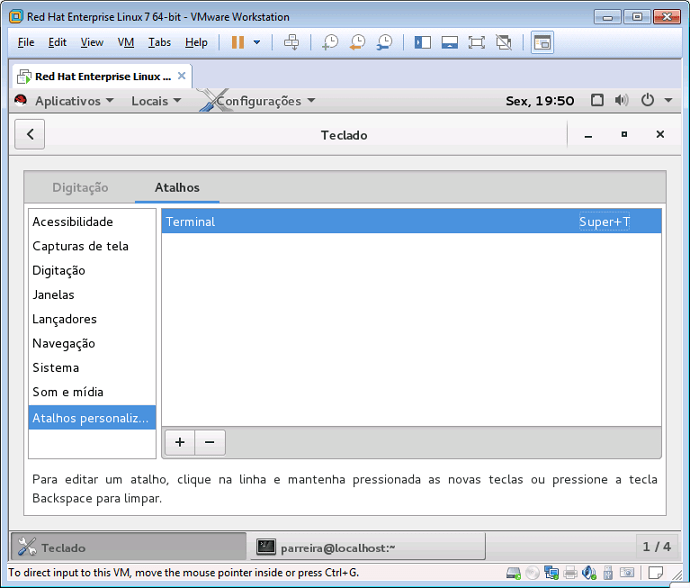
Pode fechar a janela e teste o comando pressionando SUPER+T no teclado.
Instale o Google Chrome.
O Firefox já vem instado como navegador padrão. Para quem prefere o Chrome segue o passo a passo:
Para instalar abra uma janela do terminal usando SUPER+T.
Adicione o repositório da Google usando o comando abaixo:
sudo vim /etc/yum.repos.d/google-chrome.repo
Aperte i para acionar o modo inserção e copie e cole usando CTRL+SHIFT+V o código abaixo:
[google-chrome]
name=google-chrome
baseurl=http://dl.google.com/linux/chrome/rpm/stable/$basearch
enabled=1
gpgcheck=1
gpgkey=https://dl-ssl.google.com/linux/linux_signing_key.pub
Aperte ESC para sair do modo de inserção. Tecle :wq para salvar e sair.
Utilize o comando a seguir para instalar o Chrome:
sudo yum install google-chrome-stable
Confirme com s ou y em todas as perguntas.
Ao término o Chome deve estar disponível no menu em Aplicativos > Internet.
Instale o repositório EPEL
O EPEL - Extra Packages for Enterprise Linux - é um repositório repleto de pacotes extras mantidos pela comunidade. É muito grande a chance de quando estiver testando e estudando algumas coisas no futuro você precise de algo que esteja disponível neste repositório.
Para instalar utilize o terminal (SUPER+T) e insira os seguintes comandos:
# crie uma pasta em sua home
cd ~
mkdir tmp
cd tmp
# baixe o RPM
sudo wget http://dl.fedoraproject.org/pub/epel/7/x86_64/e/epel-release-7-6.noarch.rpm
# instale
sudo rpm -ivh epel-release-7-6.noarch.rpm
# remova a pasta temporaria
rm -rf tmp
Configure uma pasta compartilhada com o Host (Shared Folder)
A configuração de uma pasta compartilhada com o Host permite a troca de arquivos entre o Host e o Guest. Isto é muito útil quando estamos estudando e precisamos trocar arquivos entre VMs específicas.
Para configurar a pasta compartilhada vá nas configurações da VM (VM > Settings), na aba _Options _e selecione o ítem Shared Folders.
Na direita selecione Always enabled e clique em Add.
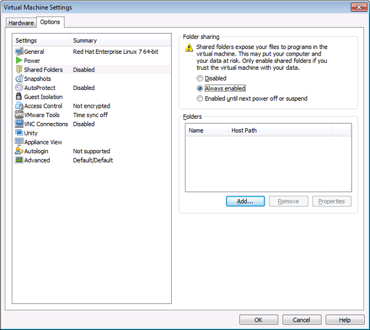
Selecione _Next _e após clique em _**Browse **_para selecionar a pasta no Host que será compartilhada.
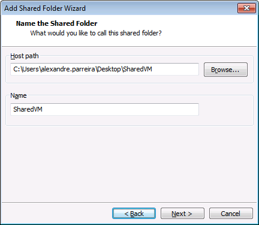
Clique em _Next _e deixe marcado Enable this share.
Clique em Finish.
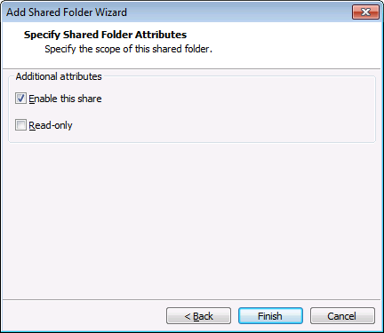
Dependendo do estado da máquina e do Guest SO instalado você pode obter um erro pois o VMware vai tentar “montar” a pasta automaticamente.
Fim
Por enquanto é só pessoal. Irei atualizar este post conforme outros ítens forem necessários / indicados.
Paz e sucesso a todos!
Compartilhe esse post nas redes sociais...Valdecir Carvalho
Nerd e pai orgulhoso da Mariana e João. Profissional Sênior de TI com foco em arquitetura de infraestrutura e cloud computing. Blogueiro, podcaster, palestrante, amante de comunidades técnicas, fotógrafo aposentado e adora jogos antigos.
#vExpert · #VMUGLeader · #VUGBrasil · #vBronwBagBrasil · #VeeamVanguard